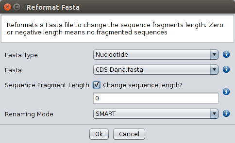

Very often FASTA files include fragmented sequences that are problematic for some (such as the Splign-Compart option, for instance) of the implemented operations but not for others. The Reformat Fasta option under Operations will remove those line breaks from FASTA files when the Sequence fragment length parameter is smaller than one. Changing the value of the Sequence fragment length parameter to a positive value will produce a FASTA file with sequences that are fragmented at the specified value, an option that may be useful when preparing FASTA files to be deposited elsewhere. The SMART option automatically extracts the gi (general identifier) codes. The GENERIC option extracts the information present in the fields that are delimited by the | symbol. The first field is number 0. The PREFIX option allows the incorporation of a prefix into all sequence names with the possibility of erasing or keeping the headers. When using the Reformat Fasta option the user must indicate whether the file contains nucleotide or protein sequences and the location of the file. The Reformat Fasta option can also be used by double clicking the right mouse button on top of a selected FASTA file.

Reformat FASTA